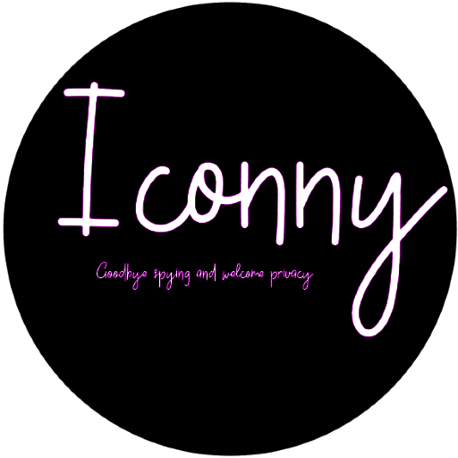

Iconny Browser 12.4 (Sfogiatelle) LTS
Basado en Iconny 12.4, Electron 11.3.0 y WDK 1.01.4, MonocromatixV4.1 LTS con soporte de 6 meses
hecho para mayor estabilidad y solido como una roca para entornos empresariales o criticos
Descargar AppImage

Lo ultimo de Iconny basado en las versiones mas actualizadas de Electron, WDK, Monocromatix